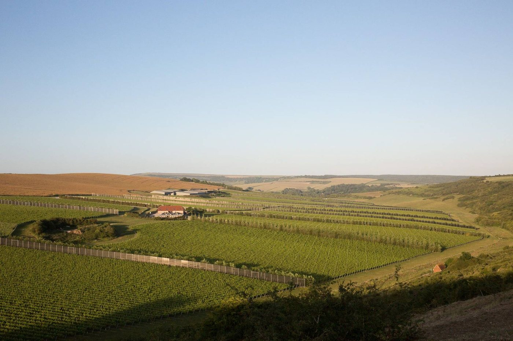

Every region
From Cornwall to Yorkshire, plus Wales and Guernsey, with more added every week.
Winter 2026 The independent guide to vineyards in England & Wales
Cellar doors, tours and long lunches from Cornwall to Yorkshire, and across to Wales and Guernsey. 150 vineyards so far, 127 of them checked with the estate itself, with the details that make a day out easy.
England, Wales & the Channel Islands · estate-checked · updated November 2026
From Cornwall to Yorkshire, plus Wales and Guernsey, with more added every week.
127 estates have confirmed their own details with us by email.
Tastings, tours, long lunches and seasonal events.
Stations, realistic taxi times, dog policies and local tips.
Every vineyard in the guide
All 150 estates on one map. Pick a region, or show only the estates that have confirmed their details, serve food or have rooms. Tap a pin for its guide, or browse the list below.
The map needs JavaScript. Every vineyard is listed below.
Estate-verified Details being confirmed Pins are placed by town or village, not exact address.
150 vineyards shown
No vineyards match those filters. Try fewer.
Explore by region
Thatch & Trail began in Sussex, with seven wine trails and a day planner. Every region now has its own page and map, and we check the details of every estate with the estate itself.
See every region →This winter
Plenty of cellar doors stay open through the winter, and some hold Christmas markets and festive tastings. Every date in our guides comes from the estate itself.
Sussex & Kent guides
Whether you want a long lunch, a night among the vines or an easy train journey from London, begin with the practical guide that matches your day.

Fourteen estates with restaurants, cafés or seasonal kitchens worth planning around.
Find vineyards with food →
From shepherd's huts and vineyard lodges to polished country hotels and estate rooms.
Explore vineyard stays →
Nearest stations, honest taxi times and the routes that are genuinely practical.
Plan a car-free visit →Drop-in tasting rooms, pre-booked tours, self-guided trails and seasonal open days.
See what is open →Checked with the people who run the estates
We contact estates across England and Wales directly, verify practical information and add the details most directories miss. Look for the Estate-verified badge: 127 estates so far, and counting.
What estate-verified means → Run an estate? Send an update →Before you set off
Vineyards vary enormously, from big estates with restaurants to a cellar door open a few afternoons a week. These are the questions people ask most.
Often, yes. Many tours and tastings are pre-booked only, and some estates open their cellar door on set days. Each guide says what the estate told us, so check it before you travel.
Many estates are a short taxi from a station, and a few are a walk. Every guide gives the nearest station and how the estate suggests you finish the journey.
The estate itself has confirmed its details to us by email: opening days, tours, food, dogs and how to get there. 127 of the 150 estates in the guide have done so.
Sussex, where it began, plus Kent, Surrey, Hampshire, the Thames Valley, the East of England, the South West, the Cotswolds and the West, Wales, the Midlands, Yorkshire and the Channel Islands, with more estates added every week.
Vineyards near: London · Brighton · Canterbury · Guildford · Winchester · Bath · Exeter · Tunbridge Wells · Chichester · Horsham · Maidstone · Hastings · Ashford · Cheltenham · Hereford · Reading · Dorchester · Leeds · Petersfield · all towns
More guides: East Sussex · West Sussex · Devon · Vineyard tours & tastings